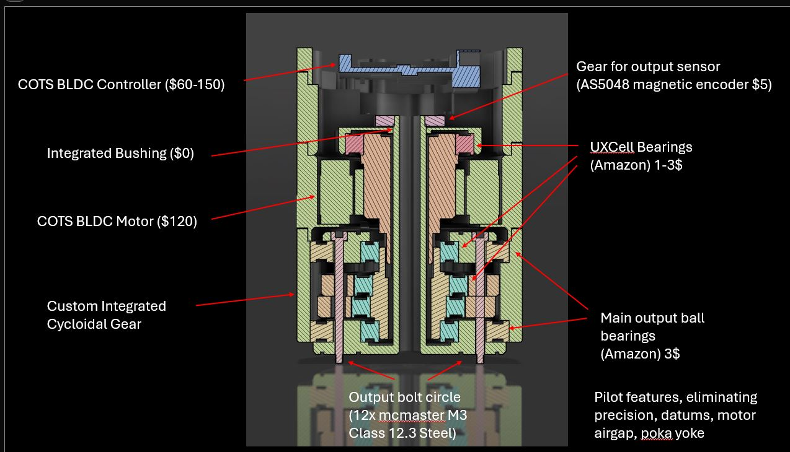
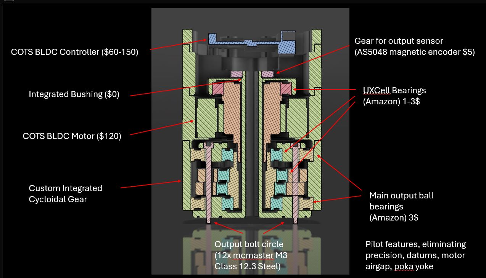

Chris Vallone
Ongoing Projects in Robotics, Mechanical Design & Embedded Systems
🔧 Humanoid Robots & Custom Actuators
- Developing bipedal humanoid robot platform
- Designing and tuning servo actuators for precision control
- CAD, FEA, and embedded control integration


⚙️ Actuator Analysis & Free‑Body Diagrams
Structural and thermal analyses safeguard a 30 Nm continuous / 90 Nm peak torque envelope.
 

🖼️ Full‑Body Cross‑Sections


📸 As‑Built Actuator Gallery


🚀 UT Dallas – Bates Propulsion Labs
Test Stand Design & Fabrication
Designed and built structural test rigs for rocket propulsion systems.
Load calculations, weld details, and sensor integration.


🆠FIRST Robotics – 5th Place, World Championship
Led mechanical sub‑team for drivetrain and manipulator; iterated from whiteboard to final bot in 45 days.


📠GD&T & Water Jacket for Rocket Engine
GD&T drove manufacturable cooling channels meeting 0.25 mm profile tolerance on 5‑axis billet.
🧪 3D Metal Printer – Induction Heated Liquid Metal
Built an experimental deposition system that spits 750 °C aluminum droplets along a G‑code path.
⚡ Electric Car Firmware (Formula SAE)
Wrote real‑time CAN firmware controlling traction inverter, BMS comms, and shutdown loops.